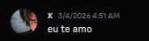
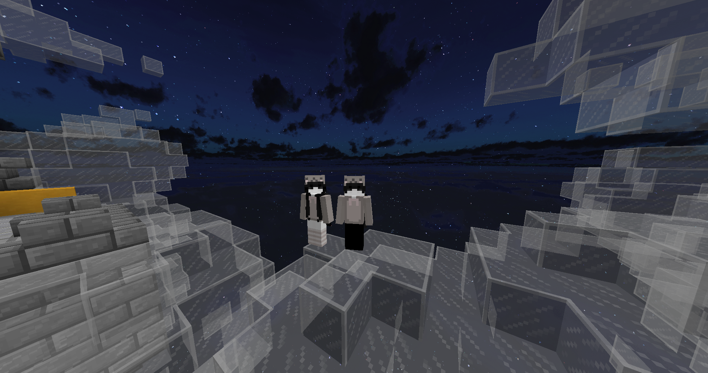
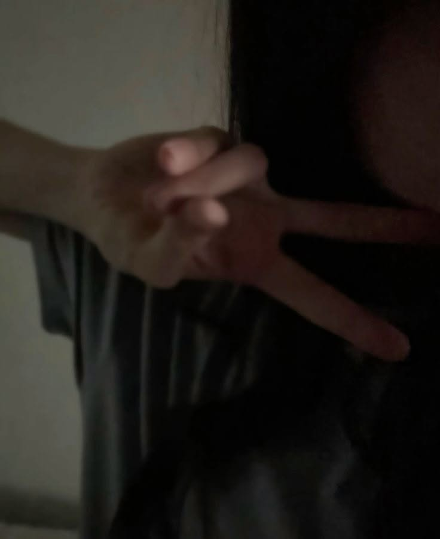
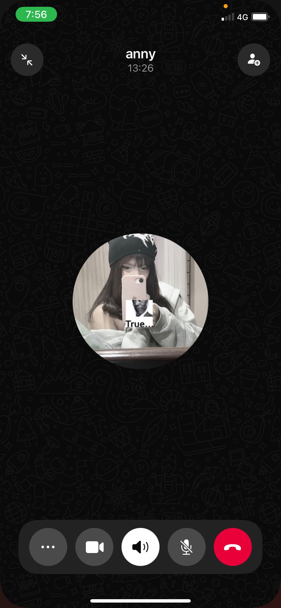

Desde que você me chamou pra jogar minecraft, eu já estava feliz e muito mesmo, aquilo me distraia de tudo o que ocorria na minha mente, e com o decorrer dos dias e nossos momentos e até brigas me deixando mal, eu nunca consegui e nunca vou conseguir deixar de te amar. Eu posso citar cada momento que tivemos pois me lembro de todos, momentos felizes nunca sai da mente das pessoas. E você é um momento importante pois nunca vai sair da minha mente Anny. Todos os problemas se esvaziam perto de você, tudo que eu quero é que nós ficassemos juntos até o final da minha vida, da nossa vida. Quero ter histórias pra contar sobre nós, quero ouvir sua risada a cada minuto, quero você. Eu espero que isso tudo se resolva algum dia e a gente se encontre novamente, eu quero te agradecer por ser tão importante na minha vida.

Anny, você foi a luz no fim do tunel, você me afastou de um vicio, você foi a pessoa que me livrou de varios problemas mesmo sem resolver eles. Você foi a maior riqueza que já tive em toda minha vida, hoje você se arrumando eu estava todo bobo olhando pra ti, imaginando o quão perfeita você é, me da raiva você se comparando com outras pessoas sendo que você é a garota mais maravilhosa que o mundo teve, só não perceberam ainda, quero que você viva bem, quero que você nunca tenha problemas, quero que você seja a mulher mais feliz do mundo. Ah, e seu jeitinho, aquele jeitinho... puta que pariu, você faz as pessoas rirem sem fazer o mínimo de esforço, só por ser você mesma. Seus olhares passam confiança e segurança, assim como sua voz, você é luz, você é divina, você é um anjo Anny. Se cuida Anny Vitória, eu te amo.